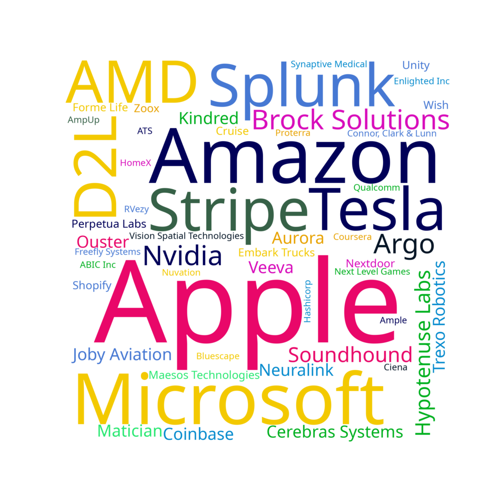

One-Year Outlook
80% of people thought they'd be working full time one year from when they submitted the survey, with most of those people already having a job lined up
Full-time Job Employment Arrangement
The vast majority of Trons signed normal full-time job employment agreements
Full Time Job: Was it a previous co-op?
Not only does the co-op program help develop skills for the workforce, 60% of respondents also returned to a co-op employee for a full time job after graduating!
Full Time Job Companies

A good mix of well-known names and small startups in here!
Full-Time Type of Work
Most of us are doing some kind of software, but there is a sizable amount of other responsibilities
Full Time Job: Why'd you pick it?
Not much more to say about this one
Full Time Job: Salaries
There's a pretty large distribution here, probably because of location
Full Time Job: Total Compensation (CAD) vs. Location
Someone in Ontario got crazy equity!
Full Time Job: Compensation vs. Gender
The pay gap re-emerges 😔
Full Time Job: Cumulative Universaty Average vs. Salary
Surprisingly, there's a good correlation between university average and full time pay!
Full-time Job Location
For people who've had a full time job lined up, the highest concentration of people are in California. A sizeable portion of us are in the GTA and BC as well.
Working Abroad: Would you return to Canada sometime?
Most people want to return to Canada after working abroad 🇨🇦
Working Abroad: Why did you leave Canada?
The brain drain is evident here, many of our smart colleagues left Canada because of better compensation south of the border.
Higher Education Completed After Ten Years
The amount of people who don't want anything to do with school and the number of people who want to do a masters in engineering is roughly equal
Tron Friends After Ten Years
Most people thought they'd be friends with at least a person from Tron in ten years!
Marriage Age
The vast majority of people would like to get married in the future, with most aiming for between 25-30
Children Age
There is more variability in when and if people want children. 13% of people don't plan to have kids at all.